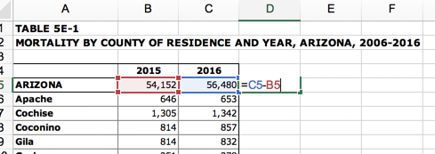
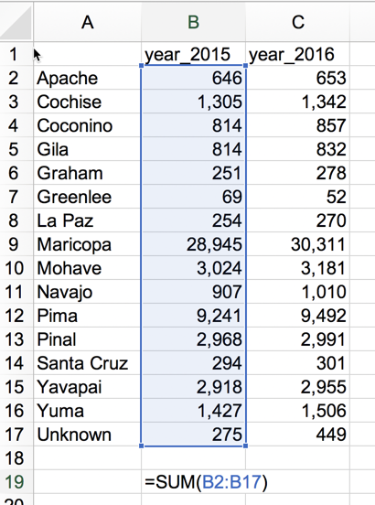
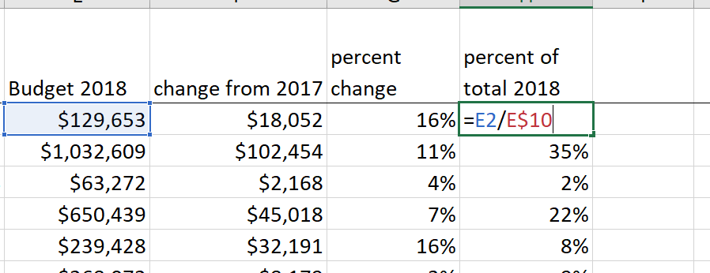

8 Formulas in Google Sheets
The quick review of math in Google Sheets uses the City of Phoenix’s budgeted spending for the 2018 fiscal year, compared with previous years.
Make a copy of the data file to follow along
You should get into the habit of creating unique identifiers, checking your corners and looking for documentation before you ever start working with a spreadsheet. These habits were covered in Data journalism in the age of replication and on a Google Sheets refresher.
8.1 Formulas in spreadsheets
Whether you use Google sheets or Excel, remember that every formula begins with the equals sign (=). Rather than the values you want to work with in the formula, you’ll use references to other cells in the sheet.
The easiest formulas are simple arithmetic: adding, subtracting, multiplying and dividing two or more cells. You’ll just use simple operators to do this:
| operator | symbol | example |
|---|---|---|
| addition | + | =A2+B2 |
| subtraction | - | =A2-B2 |
| multiplication | * | =A2*B2 |
| division | / | =A2/B2 |
Here’s what a spreadsheet looks like while editing some simple arithmetic:

The other kind of formula is a function. A function is a command that has a name, and requires arguments – usually the cell addresses or the range of addresses that it will act on. Every programming language has functions built in and many have extensions, or packages or libraries, that add even more as users find things they want to do more efficiently. You begin using a function the same way you begin a formula – with an = sign. Here are three common functions that create summary statistics for the numbers contained in a range of addresses. A range is a set of cells defined by its corner cell address: the top left through the bottom right.
You’ll usually use them on a single column at a time.
| Formula | What it does |
|---|---|
| =SUM(start:finish) | Adds up the numbers between start and finish |
| =AVERAGE(start:finish) | Computes the mean of the numbers |
| =MEDIAN(start:finish) | Derives the median of the numbers |
…where “start” means the first cell you want to include, and finish means the last cell. Use the cell address of the first number you want to include , a colon, then the cell address of the last number you want to include. You can also select them while you’re editing the formula.
Here’s an example of adding up all of the rows in a list by county:

8.2 Common spreadsheet arithmetic
The budget document shows three years’ of data: The actual spending in the fiscal year that ended in 2016; the spending that was estimated for the end of fiscal year 2017; and the proposed spending for fiscal year 2018. The first page of the document shows these amounts for broad spending categories.
You may want to widen the columns and format the numbers before you start:

8.2.1 Check the government’s math with SUM
Our first job is to make sure the government has provided us data that adds up. To do that, we’ll SUM all of the departments’ spending.
To add up the numbers from 2016, enter the following formula in cell C11, just below the number provided by the government:
=SUM(C2:C8)
and hit the enter keyCopy that formula to the right. Notice how the formula changes the addresses that it is using as you move to the right – it’s adjusted them to refer to the current column.

What’s wrong? The numbers for the budget 2018 don’t add up. (Hint: look at the page called “notes” for an explanation.)
8.2.2 Change in spending
The increase or decrease in projected spending from 2017 to 2018 is just the difference between the two values, beginning in cell F3
new-old, or =E2-D2When you copy it down, note how the references to each row also adjusted. In line 3, it’s E3-D3, and so on. Excel and other spreadsheets assume that, most of the time, you want these kinds of adjustments to be made.

8.2.3 Percent change
We can’t tell the rate of growth for each department until we calculate the percent change from one year to another. Now that we already have the change, the percent change is easy. The formula is:
( new - old ) / old
.. or just scream "NOO"The new-old is already in column F, so all that’s left is to divide again. In grade school, you also had to move the decimal place over two spots, since the concept of percent change is “out of 100”. Excel formats will do that for you.
Remember, it’s always (new-old)/old , NOT the big one minus the little one. Doing it correctly, the answer could be negative, meaning the value fell.

When you’re done, you can format the answer as a percentage to get it into whole numbers.
Until you get used to it, there’s no harm in doing these calculations step by step. Excel won’t complain if you have extra columns. You can always hide them.
It’s also worth comparing the picture you get by looking at raw numbers vs. percentages. In our case, the budget for public safety is expected to rise by a whopping $102 million, but it’s a smaller percentage increase than other, smaller departments.
8.2.4 Parts of a whole: percent of total
We’d also like to know what portion of the total spending is eaten up by each department. To do that, we need the percent of total.
In our case, let’s use the total that the government gave us. In practice, you’d have to decide what to do if your figures didn’t match those provided by officials. You can’t assume that the total is wrong – you could be missing a category, or there could be a mistake in one of the line items.
The formula for percent of total is:
category / totalAgain, Excel will multiply by 100, or move the decimal place over for you once you format.
But you have a problem: You either have to type in each row, or you get something like this if you try to copy:

Excel has done its magic, adjusting the location of both the numerator and the denominator when you copied. You don’t have to type in each formula one by one, though. Instead, you’ll use anchors, known in spreadsheets as “absolute references”. Think of a dollar sign as an anchor or stickpin, holding down the location of part of your formula. If you put the stickpin before the letter in the formula, it holds the column in place. If you put it before the number, it holds the row in place. If you put it in both places, it holds the cell in place.
So our new formula for the percent of total is:

8.3 While we’re at it: two kinds of averages
Although it doesn’t make a lot of sense in this context, we’ll go ahead and calculate the average or mean size of each department, and then calculate the median size.
Simple average, or mean
A simple average, also known as the mean, is skewed toward very high or very low values. Its formula is
sum of pieces / # of pieces that were summedBut in Excel, all we need is the word AVERAGE:
=AVERAGE(C2:C9)Median
In Excel, you can get the median of a list of numbers by just using the formula, MEDIAN()
= MEDIAN(C2:C9)8.4 The final spreadsheet

Doing simple calclutions like this on data that is provided to you by the government lets you ask better questions when you get an interview, and may even convince officials to talk with you. There’s a big difference between asking them to tell you what the budget numbers are, and asking them to explain specific results!
8.5 FAQs
Sheets won’t let me copy my formula
Make sure your formula is locked in by either hitting “Enter” or “Escape”. This is a common problem if you’re in the habit of double-clicking instead of selecting a cell. There are a lot things you can’t do while Excel thinks you’re still entering information.
Should I use average or median?
It depends. Averages are easier to explain but can be misleading. Usually, if they’re very different, median will be a better representation of the typical person, city or department. Averages in these cases are more like totals.
My percents are small numbers with decimal points
Use the format as a % button to move the decimal point over two places and insert the percentage symbol.